Brake Caliper FN 3, Servicing
Front brake caliper, servicing FN 3 brake caliper, servicing
Note:
^ When carrying out repairs, install all parts supplied in repair kit.
^ Only use mineral spirits to clean brake parts.
^ Apply thin coat of assembly paste G 052 150 A2 to brake cylinders, pistons and seals.
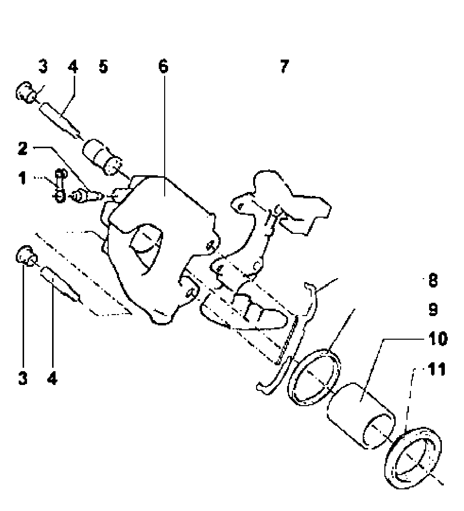
1 - Dust cap
^ Push onto bleed valve
^ Secures brake pad wear indicator wiring
2 - Bleed valve, 12 Nm
^ Apply a thin coat of assembly paste G 052 150 A2 to the threads before screwing in.
3 - Caps
^ Insert into bushing
4 - Guide pins, 30 Nm
5 - Bushing
^ Insert into brake caliper
6 - Brake caliper
7 - Carrier
^ Fastened with brake caliper
8 - Retaining spring
^ Press under the carrier and insert into both bores of the brake caliper
9 - Oil seal
^ Removing and installing go to Piston for FN 3 brake caliper, removing and installing
10 - Piston
^ Removing and installing go to Piston for FN 3 brake caliper, removing and installing
11 - Protective cap
^ Do not damage when inserting piston
Piston for FN 3 brake caliper, removing and installing
Special tools, testers and auxiliary items required
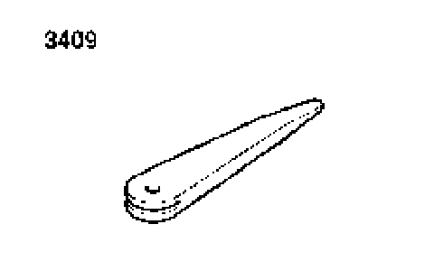
^ Disassembly wedge 3409
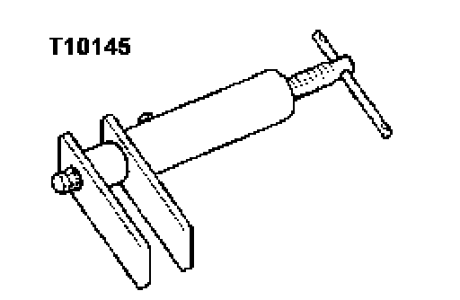
^ Piston resetting tool T10145
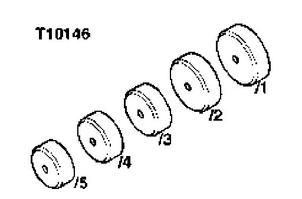
^ Assembly device for protective cap T10146/1
Removing
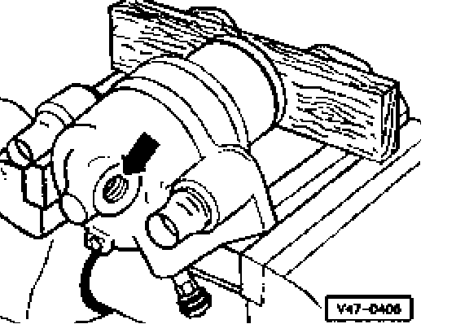
- Force piston out of brake caliper housing using compressed air.
Set a piece of wood into the valley, so that the piston is not damaged.
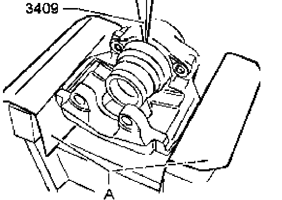
- Remove protective cap from brake caliper with disassembly wedge 3409.
A - Protective covers
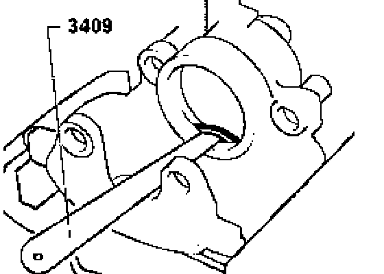
- Remove oil seal with disassembly wedge 3409.
When removing make sure that the surface of the cylinder is not damaged.
Installing
- The surface of the piston and seal must only be cleaned with mineral spirits and then dried.
- Thinly coat piston and seal with assembly paste G 052 150 A2 before inserting.
- Insert oil seal into brake caliper.
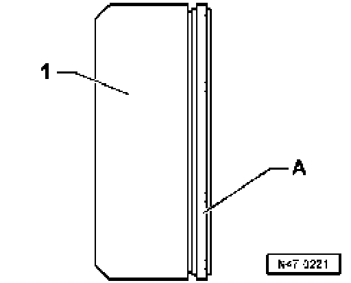
- Set protective cap - A - in assembly device T10146/1 - 1 -
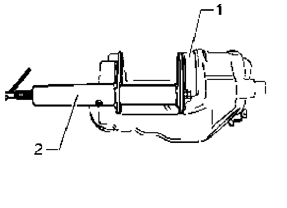
- Press protective cap with assembly device T10146/1 - 1 - and piston resetting tool T10145 - 2 - into brake caliper applying equal pressure all around.
Check that the protective cap is completely seated:
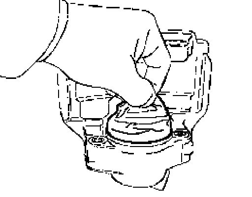
- It should no longer be possible to remove the protective cap from the brake caliper by hand.
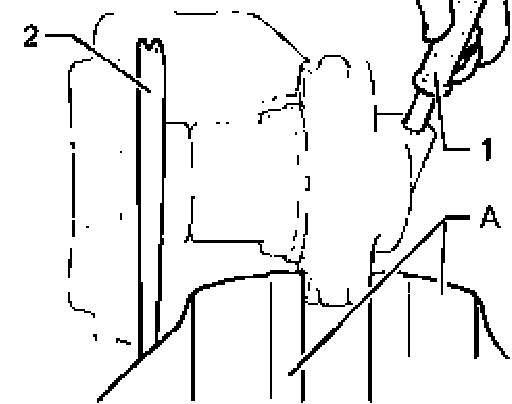
- Press piston lightly against protective cap and lock it into position, e.g. with disassembly wedge 3409 - 2 -.
To avoid damaging the seal sleeve, do not angle piston.
- Inflate protective cap with pressurized air (maximum 3 bar) - 1 -
- Thereby the protective cap is forced over the piston.
A - Protective covers
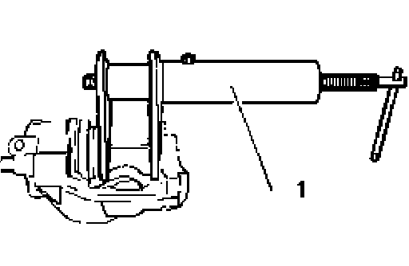
- Press piston into brake caliper with piston resetting tool T10145 - 1 -.
The outer seal lip of the protective cap slips into the groove on the piston.